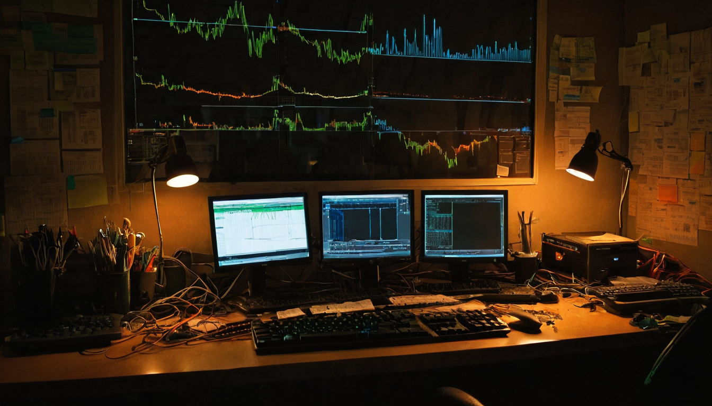
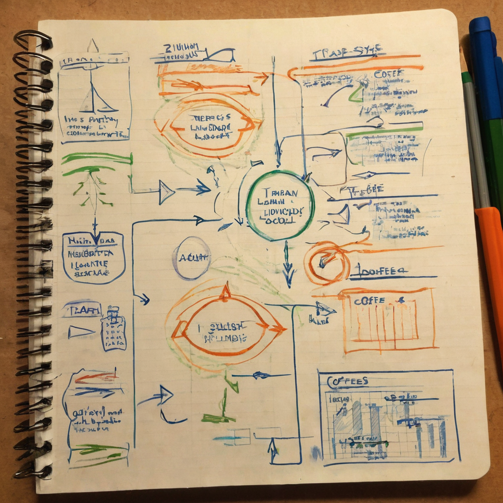

I stopped on this one because it is a Chia-native number, and those do not come across my timeline nearly as often as I would like. A token hitting a volume milestone on TibetSwap is a small thing in the grand scheme of crypto, but it is exactly the kind of small thing that tells you people are actually trading on Chia, not just holding and waiting.
@bytesandblocks posted that $BEPE is the first token to reach 70,000 XCH in trade volume on TibetSwap, the decentralized exchange built on Chia. The post included an image, presumably showing the volume figure or a chart, but no external links, docs, or additional numbers were attached. So what we have here is one claim from one post: a volume milestone, not a full breakdown of how it got there or what is driving it.

TibetSwap is one of the main pieces of DeFi infrastructure in the Chia ecosystem, and it does not get talked about nearly as much as it should. Every time a token racks up real trade volume on it, that is a small proof point that Chia's DeFi side is alive and that people are willing to actually swap assets on it, not just talk about it. Volume is not the same as value, and it is not the same as long-term health, but it is a real signal that liquidity and interest exist right now.
For a smaller, community-driven ecosystem like Chia's token space, milestones like this also tend to matter socially. They give a project something concrete to point to, and they give the broader Chia community a small reason to pay attention to a corner of the ecosystem that usually flies under the radar.
What it does: BEPE is a token trading on TibetSwap, and per this post it has now moved more cumulative XCH volume through the exchange than any other token has.
Who it helps: Anyone tracking activity on TibetSwap gets a data point. It also gives the BEPE community a milestone to rally around, and it gives builders on Chia a small real-world example of a token actually being used for trading rather than sitting still.
What problem it solves: Not a problem exactly, but it addresses a common question around newer ecosystems: is there real activity happening? A volume leaderboard, even an informal one shared in a post, is a way of answering that.
What still needs work: The post does not include where this number comes from, over what time period it was measured, or how it compares to other tokens' totals. Without a link to a dashboard or the TibetSwap data itself, I am taking this as one person's reported figure rather than something I have independently verified.
What I would test first: I would want to see the actual TibetSwap volume data directly, ideally over a defined window, and see how BEPE's curve looks against a handful of other tokens on the exchange. That would turn this from an interesting claim into something concrete.
I like seeing TibetSwap get a mention at all, honestly. It is one of the more useful pieces of infrastructure Chia has and it deserves more visibility than it usually gets. Seeing a token like BEPE put up a real volume number on it is a nice reminder that people are actually using the DEX, swapping real value back and forth, which is the whole point of building it in the first place.
I would want to see the underlying numbers before I treat this as a settled fact, just because the post itself does not link to a dashboard or explain the time frame. That is a small thing though, not a knock on the claim. It is the kind of milestone I would love to see more of coming out of the Chia token ecosystem, and @bytesandblocks sharing it is a good example of someone shining a light on activity that would otherwise go unnoticed.
Worth keeping an eye on whether TibetSwap volume across the board keeps climbing, and whether other tokens start pushing past this kind of number too. If milestones like this start showing up more regularly, with actual data behind them, that is a good sign for Chia DeFi as a whole. I would also keep an eye out for any official TibetSwap volume dashboard getting shared, since that would make numbers like this a lot easier to verify at a glance.
Source: X post by @bytesandblocks, https://x.com/i/web/status/2077477383049777291, retrieved on 2026-07-15. No external references (GitHub, docs, or dashboards) were included in the original post.